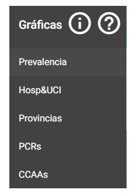
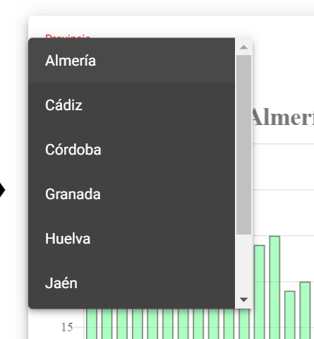
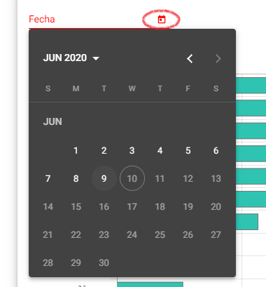

Al clicar sobre el icono se despliega la barra lateral de navegación de la página.
Al pulsar sobre los apartados de esta barra, la página navega automáticamente hasta las gráficas correspondientes. También pueden clicarse los iconos de la parte superior, que enlazan a la ventana de consejos y a la ventana de preguntas frecuentes.

Al clicar sobre alguna entrada de la leyenda, los datos referentes a ésta se ocultarán y dejarán de mostrarse en la gráfica. Esto es útil en la gráfica: "Prevalencia", para poder comparar los datos de provincias concretas.
Los desplegables de color rojo en la esquina superior izquierda de las gráficas pueden clicarse.
En las gráficas: "Hosp&UCI" y "CCAAs" puede seleccionarse el territorio del que queremos examinar los datos.
En la gráfica: "PCRs" puede clicarse sobre el icono para desplegar un calendario y seleccionar la fecha del día del que queremos examinar los datos.
Al clicar sobre los botones que aparecen debajo de las gráficas se descargará un archivo en el formato correspondiente.
El botón: "API Sevilla" que aparece en la esquina superior derecha de la página redirige a un volcado de los datos refentes al histórico de las diferentes zonas residenciales de Sevilla recogido por la junta de Andalucía durante la pandemia. Los datos se expresan en formato JSON.